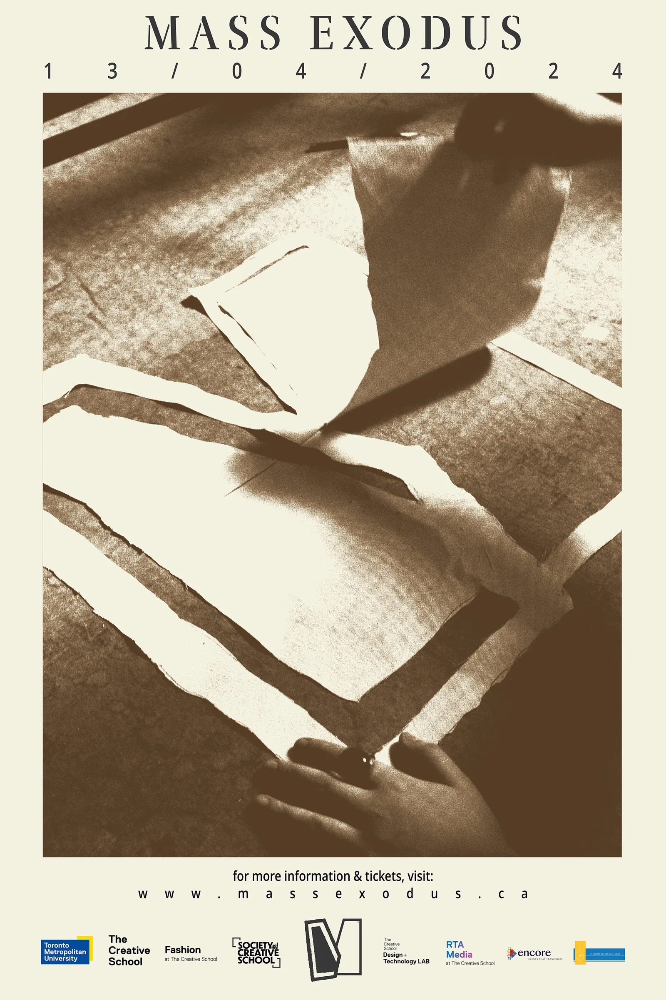
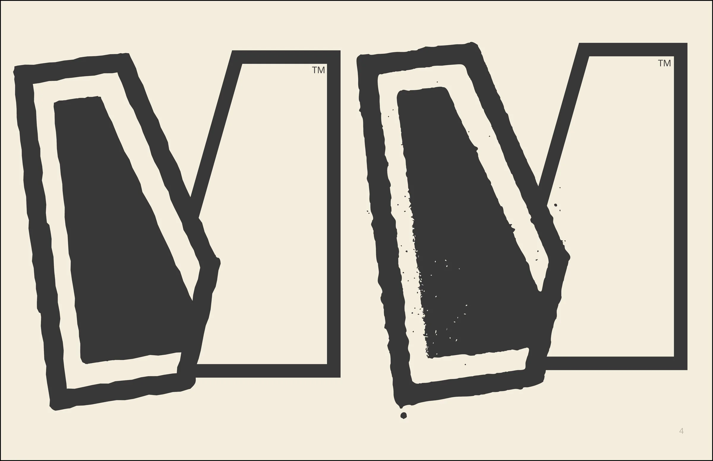
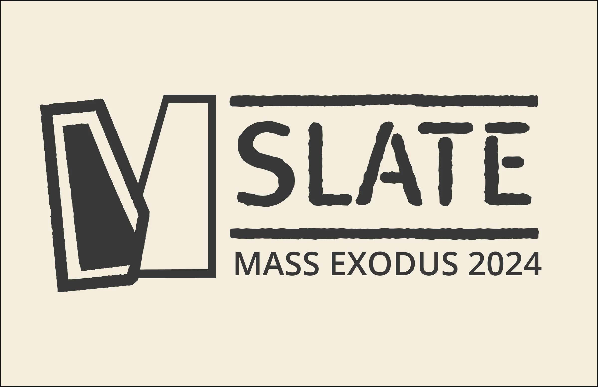
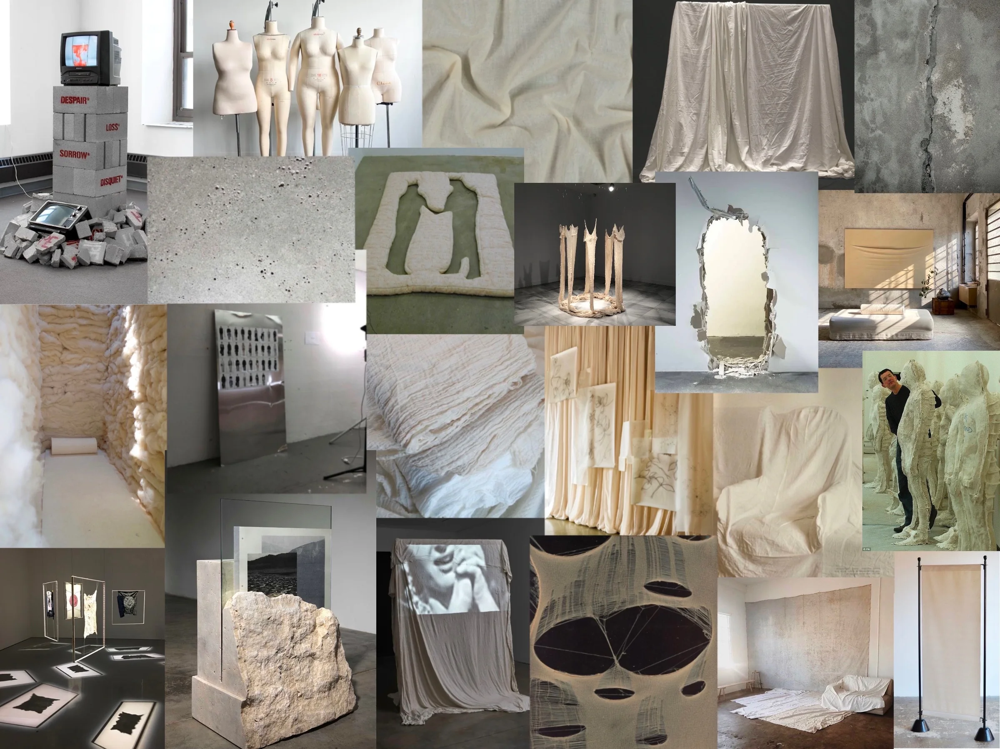
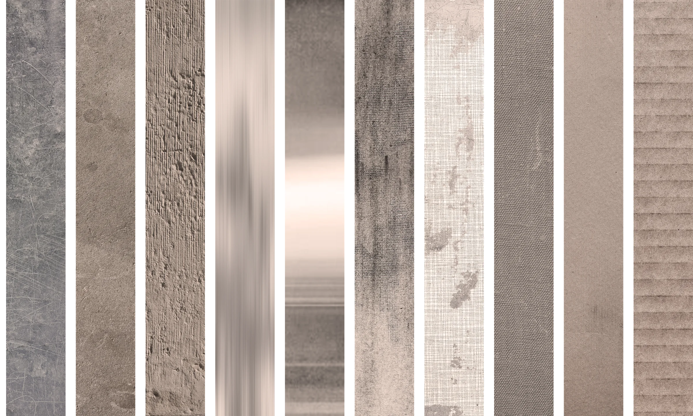
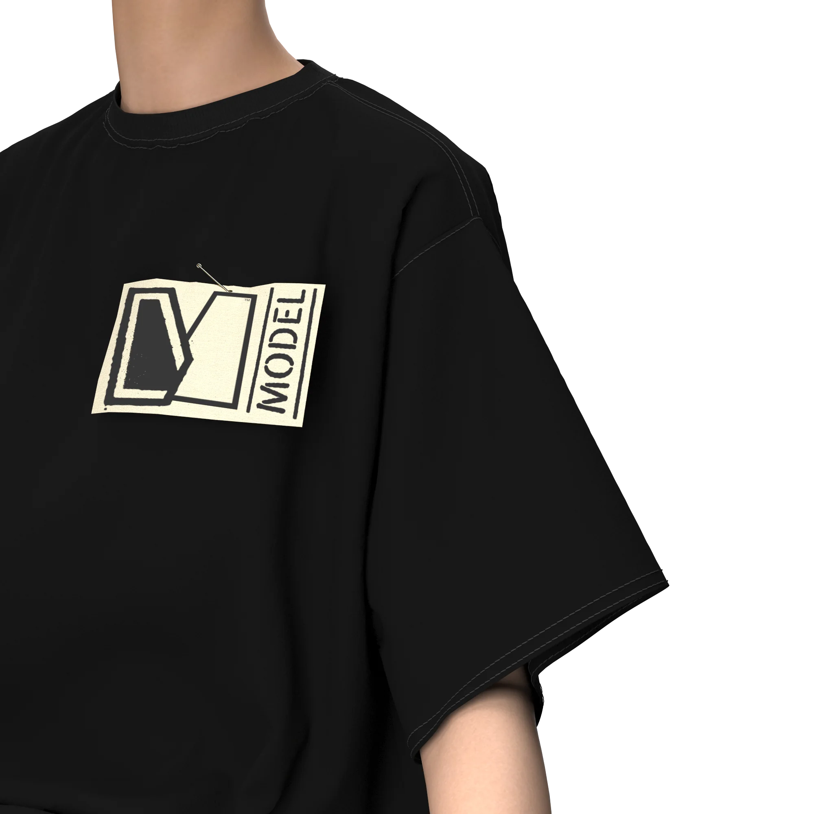
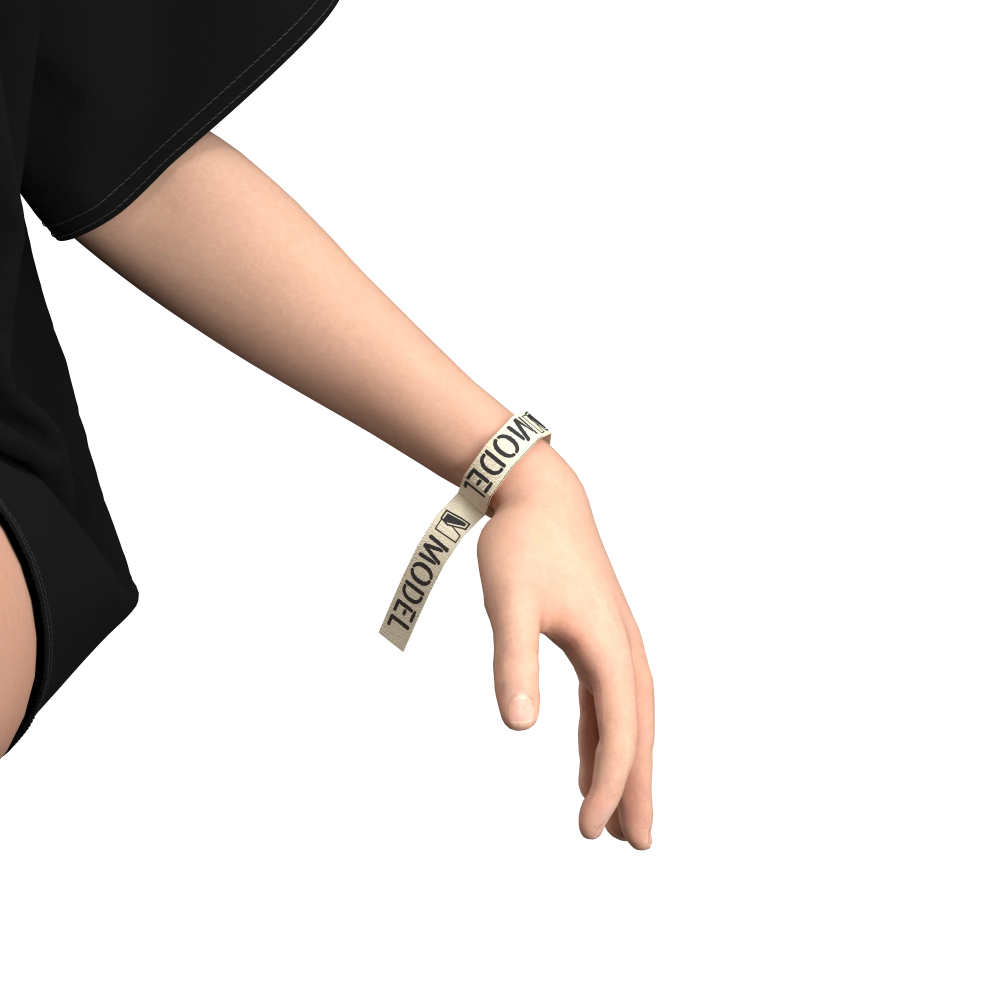
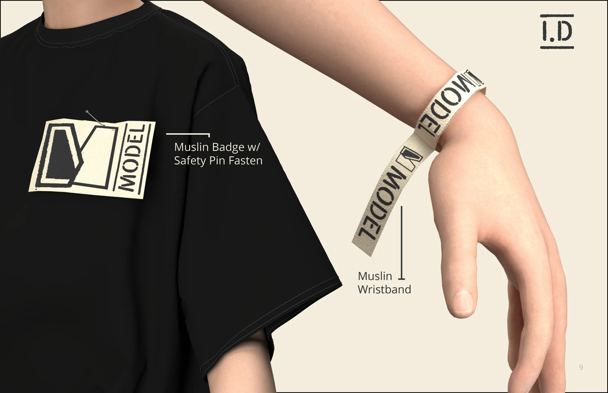

Identity system / Fashion exhibition / 2024
SlateMass Exodus 2024
A visual and spatial identity built as a near-blank surface: raw enough to hold many voices, precise enough to make the graduating designers the focus.

01 / The premise
A base, not a costume.
Slate began with essentialism: remove what is excessive, establish a durable framework, and leave space for each designer to inscribe their own narrative.
The identity avoids prescribing one aesthetic for the show. Its paper, concrete, muslin, and graphite language behaves like an exhibition material—present, tactile, and deliberately quiet.

02 / Identity system
A controlled set of raw materials.



03 / Applications
The identity leaves the page.
The system extends from event communication into wearable credentials and tactile objects, keeping the same stripped-back logic at every scale.



Outcome / System over spectacle
A framework polished enough to hold the show, quiet enough to let the work speak.